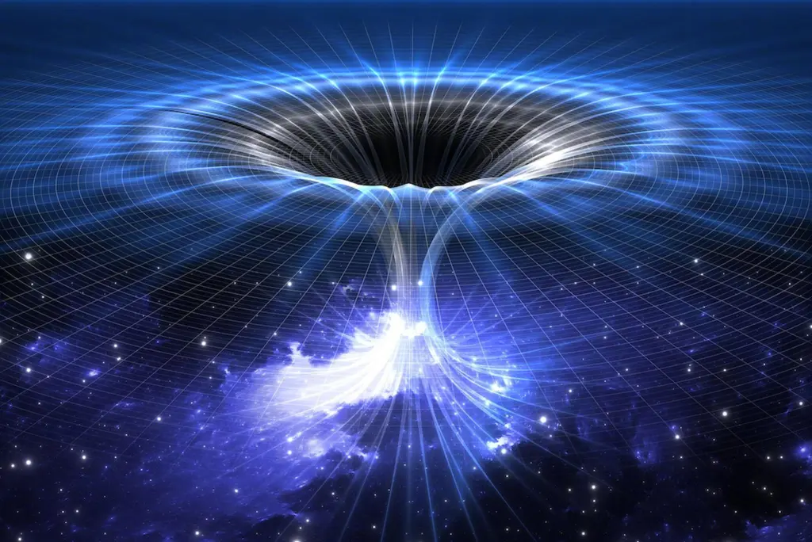

Veja o vídeo a seguir:
Se quiser saber mais sobre, leia:
Buracos negros, exemplares supremos do horror cósmico. Estruturas tão densas que a própria luz, a entidade mais veloz que conhecemos, é torcida e aprisionada eternamente em seu interior. Seja um planeta, uma estrela ou um dispositivo móvel, quando a proximidade com um desses monstros é atingida, fuga é inexistente. Mesmo lutando, a tentativa é fútil. Uma vez no interior do vácuo de um buraco negro, confinamento eterno na obscuridade cósmica é a sentença. No entanto, neste momento, o protagonista surge... Bem, que piada fraca. Não é bem isso. Em vez disso, focaremos nos parentes desaparecidos, os buracos brancos.
Nosso relato se desenrola no século 20, quando um jovem desconhecido publicou um artigo que desencadeou uma revolução na física, cuja compreensão total permanece desafiadora até hoje. O autor em questão era o renomado Albert Einstein. O documento inaugurava a teoria da relatividade restrita, a qual revolucionou nossa percepção do tempo, associando-o à velocidade relativa.
Quanto mais rápido você viaja, mais devagar o tempo passa em relação a um observador estático. Além disso, o ano de 1915 marcou outro marco profundo quando Einstein promulgou a Teoria da Relatividade Geral. Nesse contexto, o universo não era mero espectador do espaço-tempo, mas sim um participante, curvando o espaço-tempo para gerar a gravidade. A visão newtoniana da gravidade foi inteiramente abalada, substituída pela compreensão de que a gravidade não é uma força, mas sim a curvatura do espaço-tempo.
Apesar disso, a nova teoria apresentava suas próprias lacunas, às vezes carecendo de soluções. Um enigma notório era o comportamento de objetos esféricos e massivos, como planetas, na distorção do espaço-tempo. Pouco após a Teoria da Relatividade Geral ter sido divulgada, Karl Schwarzschild, físico notável, ofereceu uma solução. No entanto, uma destas soluções, incômoda tanto para Schwarzschild quanto Einstein, revelou uma singularidade. Talvez você já preveja o que vem a seguir – um objeto cuja gravidade é tão intensa que nem a luz se liberta, um enigma que somente décadas depois foi detectado: o buraco negro.
Agora, no entanto, direcionamos nossa atenção a um objeto relacionado que, de certo modo, foi negligenciado pelo tempo – os buracos brancos. Pode-se considerar os buracos negros como irmãos famosos que atraíram a total atenção da comunidade científica, enquanto seus irmãos gêmeos brancos foram relegados ao esquecimento. Eles, de fato, podem ser vistos como irmãos quase idênticos. Muitos físicos teorizam que um buraco branco seria idêntico a um buraco negro em todos os aspectos, exceto um: um buraco negro engole matéria, enquanto um buraco branco a libera. Nada, nem mesmo a luz, pode entrar no buraco branco.
A terminologia amplamente aceita para um buraco branco é "um buraco negro revertido no tempo". Imagine filmar um buraco negro engolindo matéria e, em seguida, reverter o filme para retratar o buraco negro liberando a matéria. Essa é a essência de um buraco branco. Entretanto, isso suscita uma pergunta intrigante: de onde vem a matéria que um buraco branco expele? Uma teoria sugere que essa matéria provém de buracos negros localizados em algum lugar distante no universo. Nesse cenário, os buracos negros seriam as entradas e os buracos brancos, as saídas. Essa ligação poderia até formar uma espécie de "buraco de minhoca".
Essa concepção não apenas resolve o paradoxo da informação associado aos buracos negros, mas também oferece uma explicação sobre como a matéria é liberada de um buraco branco. Além disso, há a hipótese de que buracos brancos possam ser os estágios finais dos buracos negros que evaporaram. Essa ideia se alinha com a teoria da gravidade quântica em loop, que busca unir a mecânica quântica com a relatividade. No entanto, é fundamental compreender que tais suposições carecem de evidências sólidas até o momento.